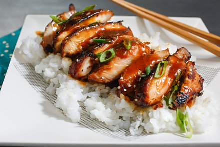

Chicken Teriyaki Recipe

Description
This Chicken Teriyaki recipe is quite simple and can be made
in no time at all. IMPORTANT: A wok will be required for this recipe. Other
wok-less versions of this recipe can be found elsewhere.
Ingredients
- 1 cup soy sauce
- 1 cup granulated sugar
- 1/2 teaspoons brown sugar
- 6 cloves garlic, crushed in a press
- 2 tablespoons grated fresh ginger
- 1/4 teaspoon freshly ground black pepper
- 1 3-inch cinnamon stick
- 1 tablespoon pineapple juice
- 8 skinless, boneless chicken thighs
- 2 tablespoons cornstarch
>
Directions
- In a small saucepan, combine all ingredients except cornstarch and chicken.
Bring to boil over high heat. Reduce heat to low and stir until sugar is
dissolved, about 3 minutes. Remove from heat and let cool.
Discard cinnamon stick and mix in ½ cup water.
- Place chicken in a heavy-duty sealable plastic bag. Add soy sauce mixture,
seal bag, and turn to coat chicken. Refrigerate for at least an hour,
ideally overnight.
- Remove chicken and set aside. Pour mixture into a small saucepan.
Bring to a boil over high heat, then reduce heat to low. Mix cornstarch with 2
tablespoons water and add to pan. Stir until mixture begins to thicken,
and gradually stir in enough water (about ½ cup) until sauce is the consistency
of heavy cream. Remove from heat and set aside.